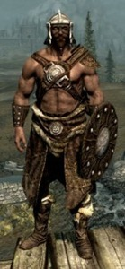
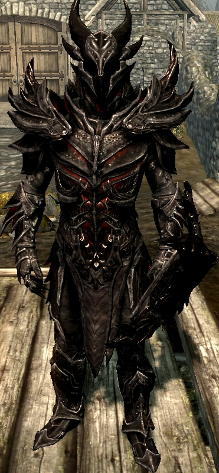

Armaduras Leves(Light Armor) e Armaduras Pesadas (Heavy Armor)
As armaduras leves(Light Armor)aumentam a agilidade do personagem e consomem menos energia. Entretanto, são menos efetivas no quesito proteção. As mais básicas são feitas com pele ou couro de animal e as mais sofisticadas se dividem em cinco categorias: do tipo élfico, escamada, de vidro ou de ossos de dragão.
As Heavy Armor possuem um eficiente nível de proteção, ou seja, em um confronto corpo a corpo a vida tende a diminuir mais lentamente do que nas Light Armor. Entretanto, são bem pesadas e pouco ágeis. Importante ressaltar que existem mais possibilidades de Heavy Amor em relação as Light Armor, pelo menos no que diz respeito a opção de ferreiro. As mais simples podem ser produzidas com ferro ou aço, e as mais sofisticadas se dividem nos tipos Dwarven, Orcish, Ebony e Daedric.
Armaduras Leves(Light Armor)
Armadura de Vidro
A Glass Armor pode ser achada em "Northwatch Keep", no noroeste do mapa de Skyrim, comprada ou feita por meio da opção de ferreiro. A armadura de vidro é o segundo melhor tipo de armadura leve, apenas atrás da Dragon Amor.
Armadura de Pele
Uma armadura simples, feita de pele de animal. É armadura mais fraca de todo Skyrim, mas por ser a armadura mais fraca de Skyrim, é considerada a melhor armadura para se movimentar pelo fato de ser extremamente leve.

Armadura de Couro
Apesar de dar mais proteção que a opção anterior, ainda se trata de uma armadura pouco efetiva. É feita com tiras de couro na fornalha.
Armaduras Pesadas(Heavy Armor)
Armadura de Orcish
Para poder fazer a sua própria armadura de Orcish o jogador precisa estar, no mínimo, no level 50 de Smithing. É uma armadura pesada, entretanto bastante efetiva em relação as anteriores. Possui uma semelhança com armaduras imperiais japonesas. Um detalhe engraçado é que quando você se aproxima de um guarda usando uma Orcish Armor ele, por vezes, comenta "Armadura de Orcish, forte e feia como aquele que a forjou".
Armadura de Daedric
A armadura estilo Daedric é, talvez, uma das mais exóticas do jogo. Para conseguir fazê-la é preciso um nível 90 em Smithing. É difícil de forjar a Daedric Armor porque ela requer Daedra Hearts. Para obter este item é necessário executar algumas missões, ou comprar em lojas específicas que, ocasionalmente, possuem o artefato para venda. Quando o jogador passa pelos guardas vestindo a Daedric Armor, as vezes, pode ouvir "A sua armadura é incandescente!".

Armadura de Dragon
Assim como nas Light Armor, a armadura de ossos de dragão das armaduras pesadas só pode ser feita a partir do nível 100 de Smithing. É a última opção de ferreiro no que tange as habilidades permitidas pelo Smithing. Apesar parecer ser a melhor armadura de Skyrim, a Dragon Armor acaba por estar muito perto em qualidade da anterior, Daedric. O que diferencia ambas é a facilidade em encontrar a matéria prima para fabricação. Enquanto a Daedric necessita uma série de itens raros, a Dragon Armor utiliza em sua essência apenas Dragon Scales e Dragon Bones - abundantes no jogo.